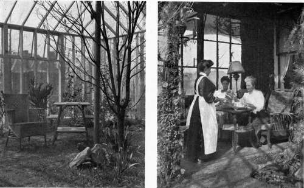

Chapter XI. Indoor Gardens
Description
This section is from the book "What England Can Teach Us About Gardening", by Wilhelm Miller. Also available from Amazon: What England Can Teach Us About Gardening.
Chapter XI. Indoor Gardens
The fun of having the best fruit, fresh vegetables all winter, and flowers the year round — The pleasure of collecting — A cheap greenhouse at last.
THE English people seem to get about one hundred times as much pleasure out of greenhouses as we do, and it is possible that they always will. For they have agreat climatic advantage over the people of the northern United States in the mildness of their winter, which has a delightful effect upon one's coal bill. If you add to this that labour is cheaper there than here, and that every one is interested in gardening, there can be little wonder that everybody seems to have a greenhouse. The mere fact that a greenhouse enables a family to enjoy gardening the year round — and especially during the five months when trees are bare — would account for much.
But the English have one powerful incentive to greenhouse building that we do not have. They cannot ripen peaches or melons in the open air, and even grapes and plums have to be grown against walls or under glass in order to get enough sunshine to ripen them. The appeal to the stomach is deeper seated than the aesthetic sense and the English are blessed with a sturdy interest in the simple joys of eating. The first step they took to get fruit was to build high walls to keep out thieves. Then they found out that better fruit could be grown against these walls than in the open. And, when some genius discovered that the finest fruit of all could be grown under glass, there were thousands of miles of brick walls all ready to be turned into greenhouses, simply by adding glass on one side. Consequently there are hundreds of miles of lean-to greenhouses in England which are devoted to raising fruit. In many of these no heat is needed until March, and then only enough to keep out frost — say a temperature of 400. Truly, the English are in luck.
The most wonderful thing, however, about greenhouses in England is the great number of small ones you see everywhere and the obvious comfort and pleasure they give. There are no accurate ways of measuring such things, but it is certain that the greenhouse is not considered a "rich man's game," as it is here. It is almost a moral certainty that every Englishman who can afford a greenhouse is bound to have one. And I judge that every Englishman who can afford a piano can also afford a greenhouse.
We shall come to this, too, for I am happy to say that the era of cheap greenhouses has really begun. You can now buy a greenhouse for $250, the price of a fair piano. You could have a good deal of pleasure with it at a cost of #50 a year. The average family will spend a great deal more than that on piano lessons and music. The #250 greenhouse I have in mind is about seven by nine feet and includes not only the foundation but the heating plant. It is portable and can be taken away by a tenant. It is of good construction, attractive inside and out, and without a particle of foolish ornamentation.
What can you do with a greenhouse? About a dozen good things.
PICTURE OF THE TROPICS. DATURA, WITH> TRUMPETS A FOOT LONG. ALMOST EVERY ENGLISH GREENHOUSE PRIDES ITSELF ON SOME OLD PIECE, I. E., A TREE OR SHRUB GROWN TO GREAT SIZE. Seepage no.
A NEW KIND OF WINTER GARDEN INVENTED BY MRS. STEWART, OF GLEN RIDGE, N. J. INSTEAD OF NARROW WALKS AND RAISED BENCHES IT CONSISTS OF A LAWN BORDERED BY FLOWERING TREES, SHRUBS AND BULBS. A LIVING ROOM, NOT A DAMP, HOT PLACE. See pages 112, 113.
1. You can force fruit or vegetables to maturity out of season.
2. You can gain a month or more on the outdoor season by starting vegetables indoors.
3. You can produce flowers for cutting.
4. You can grow plants for decorating the house.
5. You can grow flowers for exhibition and competition.
6. You can use your greenhouse as a hospital for house plants that are out of order.
7. You can winter tender plants, such as geraniums, and all bedding material.
8. You can make your garden bloom a month earlier by starting flower seeds indoors.
9. You can make a collection of your favourite flowers and go in for plant breeding.
10. You can make the greenhouse a reminder of the tropics, or at least a bright and pretty picture.
11. And, finally, you can make the greenhouse, to some extent, a living room.
Not all of these things, however, are possible in any one house. The first nine purposes are practical, the last two are artistic, and the two groups conflict. If you want your greenhouse to be a factory it cannot be beautiful all the time. If you wish your greenhouse to be a living room, or a picture of the tropics, you must not crowd it with plants. Indeed, overcrowding is the worst feature of American greenhouses. They are rich in species, but poor in pictures. The specimens do not have room enough to develop and plants demanding radically different temperatures and treatment are put into the same house. You cannot grow roses and carnations together; they must have separate houses, or separate compartments. Our besetting sin is attempting too much. We do not give the gardener a fair chance.
I am sure that greenhouse owners do not realize how many different purposes are covered by the same roof and how much these different aims conflict. Do you own a range of greenhouses ? If so, may I make a suggestion ? Take the list of eleven purposes mentioned in a preceding paragraph and go over it with your gardener. Assign roughly the per cent, of space you are willing to give to each purpose. Then go into your greenhouses and you will see them from a new point of view. Ask your gardener where the shoe pinches. This scheme will help you decide what to throw out and how to get more pleasure from what you have. You cannot enjoy pictorial effects (see plates 46 and 47) without purging your greenhouse. And you must decide for yourself whether you want a plant factory, a picture of the tropics, or a living room.
Continue to:
Tags
garden, flowers, plants, England, effects, foliage, gardening